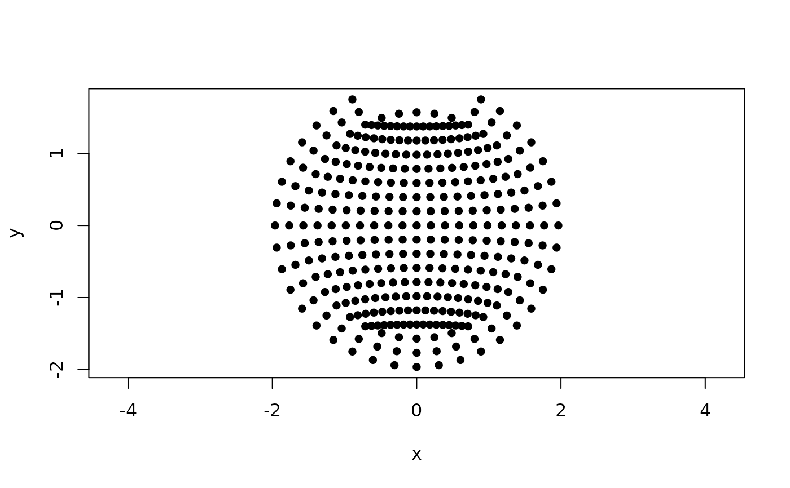

Coordinates of the spherical 10-05 system sensors
system1005.RdA dataset containing the Cartesian coordinates of high-density EEG sensor positions of the 10-05 system in 3D space on an idealized spherical surface, along with their corresponding positions in 2D space. This template contains 348 possible electrode positions in the 3D space and 335 possible positions for the 2D layout. The 2D layout contains fewer positions because fiducial markers and extremely low electrodes (such as those on the lower neck and cheeks) are excluded to maintain visual clarity in topographical plots.
Usage
data("system1005")Format
A list with the following elements:
- D2
A tibble with 3 columns containing x and y coordinates and sensor labels in 2D.
- D3
A tibble with 4 columns containing x, y and z coordinates and sensor labels in 3D. See 'Details' for more information.
Source
The MNE-Python GitHub repository, https://github.com/mne-tools/mne-python/tree/main/mne/channels/data/montages
Details
The axis orientation in the 3D case is as follows:
x-axis: left (-) to right (+),
y-axis: posterior (-) to anterior (+),
z-axis: inferior (-) to superior (+). Because this is an idealized spherical model, the origin (0, 0, 0) represents the geometric center of the sphere. The electrodes are symmetrically distributed across this perfect spherical surface and the electrode Cz is located exactly at the apex of the sphere at coordinates (0, 0, 1).
The coordinates originate from the MNE-Python GitHub repository.
References
Oostenveld, R., & Praamstra, P. (2001). The five percent electrode system for high-resolution EEG and ERP measurements. Clinical Neurophysiology, 112(4), 713-719. doi:10.1016/s1388-2457(00)00527-7
Examples
# A simple plot of sensor coordinates from 10-05 system spherical template as points in 2D
plot(system1005$D2[,1:2], pch = 16, asp = 1)
